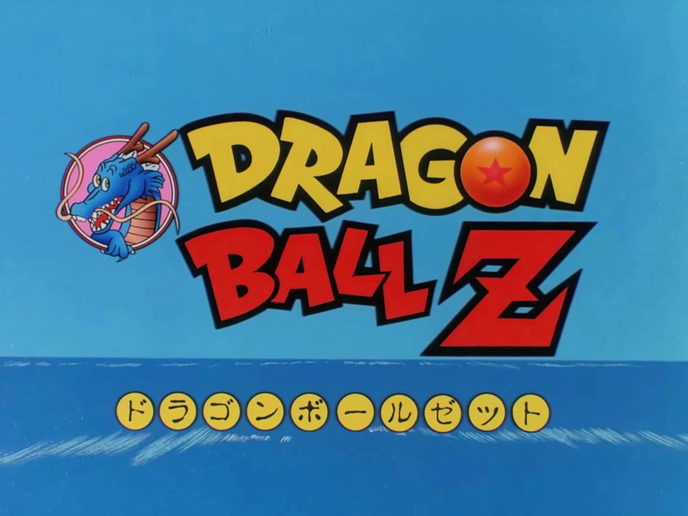
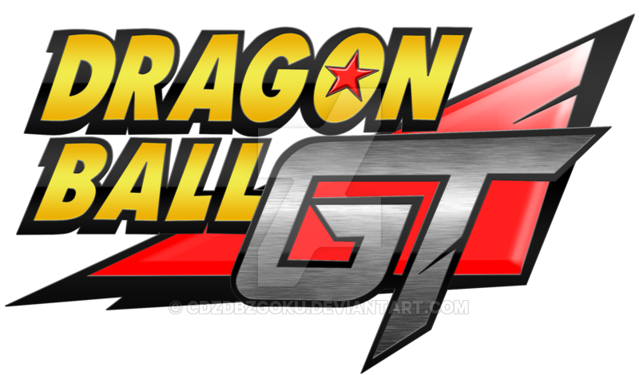
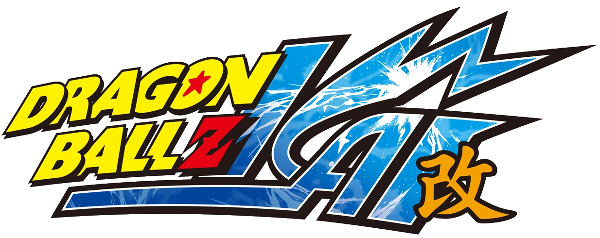
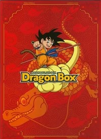

Dragon Ball Z
Dragon Ball Z (ドラゴンボールZゼット, Doragon Bōru Zetto) es la secuela de la serie de anime Dragon Ball. La serie es una adaptación de los sucesos posteriores al Arco de la 23.ª Edición del Torneo Mundial de las Artes Marciales del manga de Dragon Ball escrito e ilustrado por Akira Toriyama.
Argumento
Continuando con la adaptación del manga, la serie narra la aventura de la vida adulta de Son Goku quien, con sus compañeros defiende la tierra contra varios villanos. Mientras que la serie original, Dragon Ball, narra la historia de la infancia hasta la adultez, Dragon Ball Z es la continuación de la vida adulta que lleva Goku, paralelamente narra la madurez de su hijo, Gohan. La separación entre las series es significativa, ya que en esta versión de la historia, la comicidad y el tono de aventuras que poseía la serie anterior, es relativamente dejada de lado para mostrar una historia con un toque más oscuro y serio.
Sinopsis
Arco de los Saiyanos
4 años después del Torneo Mundial 23º, una amenaza llamada saiyano se avecina a la Tierra. Goku descubre sus verdaderos orígenes; y ahora los Guerreros Z deben pelear por el futuro del planeta.
Arco de Namek y Freeza
Luego de la desaparición de las Esferas del Dragón, Bulma, Krilin y Gohan parten al planeta natal de Kami y Piccolo para revivir a sus amigos fallecidos en la batalla contra los saiyanos, usando las Esferas del Dragón originales.
Arco de Garlic Jr.
Meses después de la batalla en Namek, Garlic Jr. logra escapar de su encierro con el fin de acabar con Kami y Piccolo, y a su vez convertirse en el nuevo dios de la Tierra.
Arco de los Androides y Cell
Un joven del futuro advierte a Goku sobre una gran amenaza que asechará la Tierra dentro de 3 años, por lo que él y los Guerreros Z se ponen un duro entrenamiento para estar preparados para lo que sería, la batalla por el futuro del mundo.
Arco del Torneo de las Artes Marciales del Otro Mundo
Una vez lograda la paz, Goku busca nuevos retos ante los peleadores del Otro Mundo, en donde participaría en un torneo para saber quién será el discípulo del Gran Kaio.
Arco de Majin-Boo
Han pasado ya 7 años de la derrota de Cell y la paz reina en la Tierra. Hasta que el mago Babidi llega al planeta con el fin de despertar a Majin-Boo. Ahora los Guerreros Z deben evitar que el malvado cumpla sus planes y salvar al universo.
Arcos
- Saiyajins(episodios 1-35); 1989-1990
- Namek y Freeza (episodios 36-107); 1990-1991
- Garlic Jr. (episodios 108-114); 1991
- Cell (episodios 115-194); 1991-1993
- Majin-Boo (episodios 195-291); 1993-1996
Películas, y especiales de TV y OVA
Se crearon 15 películas animadas basadas en Dragon Ball Z; 2 especiales de televisión, 3 vídeos de animación original y un cruce entre las franquicias One Piece y Toriko; todas las anteriores poseen tramas completamente distintas a las de la serie; casi ninguna de ellas se realiza en la línea temporal en la que se desarrolla la serie original y suelen luchar contra nuevos enemigos.
Películas
- Dragon Ball Z
- Dragon Ball Z: El sujeto más fuerte de este mundo
- Dragon Ball Z: Una superbatalla decisiva para el planeta Tierra
- Dragon Ball Z: Son Goku, el Supersaiyano
- Dragon Ball Z: Los increíblemente más poderosos contra el más poderoso
- Dragon Ball Z: ¡Choque! Los guerreros con un poder de diez mil millones
- Dragon Ball Z: ¡Una batalla extrema! Los tres grandes Supersaiyanos
- Dragon Ball Z: ¡Arde! Una superbatalla feroz, extrema y ardiente
- Dragon Ball Z: ¡La galaxia corre peligro! Un sujeto demasiado asombroso
- Dragon Ball Z: ¡Un dúo peligroso! Los superguerreros nunca duermen
- Dragon Ball Z: ¡Los superguerreros vencen! La victoria será mía
- Dragon Ball Z: ¡El renacer de la fusión! Goku y Vegeta
- Dragon Ball Z: ¡La explosión del Puño del Dragón! Si Goku no puede hacerlo, ¿quién lo hará?
- Dragon Ball Z: La batalla de los dioses
- Dragon Ball Z: La resurrección de 'F'
Especiales de TV
- Dragon Ball Z: Una solitaria batalla final —Quien desafió a Freeza, el padre del Guerrero Z Kakarotto
- Dragon Ball Z: ¡El desafío a la desesperación! Los superguerreros restantes: Gohan y Trunks
OVA
- Dragon Ball Z Gaiden: El plan para erradicar a los saiyanos
- Dragon Ball: ¡Hola! ¡Son Goku y sus amigos regresan!
- Te mostraremos todo: Olvida los problemas del año con Dragon Ball Z
Cruce
- Toriko x One Piece x Dragon Ball Z: ¡Supercolaboración especial!
Escenas del Anime
Anime
El manga fue adaptado en su totalidad al anime por Toei Animation en dos series. A partir del capítulo 195 del manga, su adaptación al anime fue llamada Dragon Ball Z y fueron adaptados a 291 episodios de veinte minutos emitidos desde el 26 de abril de 1989 hasta el 31 de enero de 1996, completando la historia del manga. También fueron creados dos especiales para televisión que ampliaban la historia.
Dragon Ball GT
Al terminar Dragon Ball Z, Toei Animation creó una secuela llamada Dragon Ball GT, en la cual Toriyama (contrario a la creencia popular) tuvo una gran participación, diseñó todos los personajes, incluyendo a Vegeta y su bigote, y dibujó todos los escenarios y demás. Esta historia continúa la vida de Goku y sus amigos años luego del final de Dragon Ball Z, enfrentándose a nuevos peligros. Fue estrenada el 7 de febrero de 1996, terminando el 19 de noviembre de 1997 con 64 episodios y un episodio especial para televisión titulado Dragon Ball GT: ¡Una historia alternativa de Goku! La prueba de coraje es la esfera de cuatro estrellas.
Dragon Ball Kai
El 5 de abril de 2009 se estrenó la serie llamada Dragon Ball Kai (ドラゴンボール改カイ, Doragon Bōru Kai), una nueva versión de Dragon Ball Z remasterizada en alta definición en formato panorámico con algunos cambios para festejar el 20º aniversario de la serie. Se regrabaron las voces y los efectos de sonido, se editó para que siga mejor el manga y se crearon nuevos temas de apertura y cierre.
Dragon Ball Super
Luego del éxito de la película Dragon Ball Z: La resurrección de 'F', Akira Toriyama anuncio la creación de una nueva serie, estrenada el 5 de Julio de 2015, la nueva serie relata los hechos ocurridos luego de la derrota de Majin-Boo. La serie fue anunciada con 100 episodio aproximadamente.

Dragon Box
El 19 de marzo del 2003 comenzaron a salir a la venta en Japón varias cajas recopilatorias que contenían toda la serie y material extra, la primera contenía los episodios de Dragon Ball Z desde el 1 hasta el 147 en 26 DVD y una figura de acción de Goku; la segunda salió a la venta el 18 de septiembre del mismo año y contenía el resto de los episodios de Dragon Ball Z en otros 26 DVD junto con una figura de acción de Piccolo. Luego de esta caja, el 7 de julio del 2004 salió a la venta una tercera caja con los 153 episodios de la primera serie en 26 DVD. Una cuarta caja salió a la venta 15 de junio del 2005 con la serie Dragon Ball GT y una última caja el 14 de abril del 2006 con todas las películas. Aparte de estas cajas a partir del 2 de noviembre del 2005 comenzaron a salir DVD individuales que contienen de 4 a 6 episodios cada uno.
Personal
- Producción ejecutiva:Kozo Morishita
- Autor original:Akira Toriyama(Publicado en «Weekly Shonen Jump» de Shueisha)
- Producción general: Toei, Fuji Television
- Producción:Kenji Shimizu(Fuji Television),Koji Kaneda(Fuji Television)
- Cooperación en producción: Aoni Production
- Gestión de producción: Take Torimoto, Yuuichi Suenaga
- Composición de la serie:Takao Koyama
- Dirección:Daisuke Nishio
- Diseño en jefe: Yuuji Ikeda, Tokushige Ken
- Diseño de personajes:Minoru Maeda,Katsuyoshi Nakatsuru
- Colaboración en diseños de personajes:Tadayoshi Yamamuro
- Música:Shunsuke Kikuchi
- Montaje: Shin'ichi Fukumitsu
- Dirección de audio: Nobuhiro Komatsu
- Efectos de sonido: Hidenori Arai
- Estudio de grabación: TAVAC
- Desarrollo: Toei Chemistry
Banda sonora
Temas de apertura
"CHA-LA HEAD-CHA-LA": Episodio 1 ~ Episodio 199
"WE GOTTA POWER": Episodio 200 ~ Episodio 291
Temas de inserto
- "Shura-Iro no Senshi": Episodio 20
- "Fly high": Episodio 46
- "MIND POWER ...Ki...": Episodio 139
- "Unmei no Hi ~Tamashii VS Tamashii~": Episodio 184
- "Ore ga Yaranakya Dare ga Yaru": Episodio 289
Temas de cierre
"Detekoi Tobikiri ZENKAI Power!": Episodio 1 ~ Episodio 199
"Boku-tachi wa Tenshi datta": Episodio 200 ~ Episodio 291